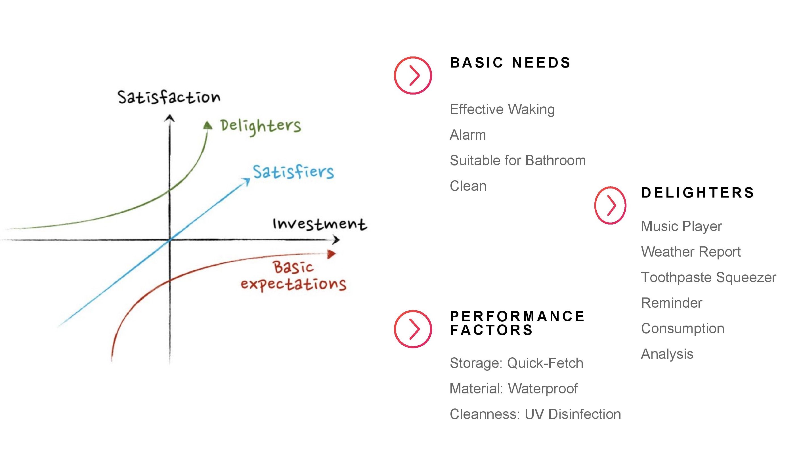
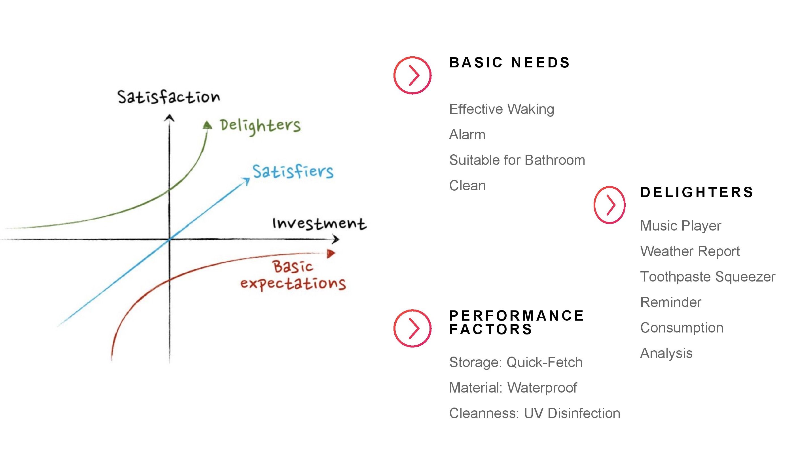

About Global Product Design
Global Product Development (GPD) is a joint course practicing a global and interdisciplinary teaching approach among three institutions in Seoul, Beijing and Hong Kong. Multicultural and multidisciplinary student teams begun by seeking and defining a global user-centered design problem, iterating through design solutions, and finally building working critical function prototypes.
Market research
The objective of the market research is to identify target customers, size and global aspects of the potential market segments we are facing. Also we want to make clear the customers’ pain points and their translation into the customer requirements. Moreover, since we are building a global product, we would like to consider it in different countries’ contexts.
From the primary research conducted, we identified common problem scenarios like messy bathrooms, over-abundance of female and male bathroom products, and general tiredness in the morning. We conducted our research in different approaches in this stage. Online research is still being carried on in order to get the most from the internet. We also designed questionnaires and conduct interviews to get factual data and examine our current assumptions.
we were able to find the specific reasons and pain-points surrounding these observations. It suggests that the psychological origin of this problem to be rooted in human aversion to decision making and general lack of self-discipline. When asked about why they are unable to get up, have breakfast, or organize their bathrooms people cite the abundance of choices and lack of motivation or it just being “hard”. Tasks that require conscious effort and decision making are further dulled by the lack of energy from just getting up. Alarms, sleep-reminders, and coffee are not effective solutions for this market segment.
Final presentation


 
